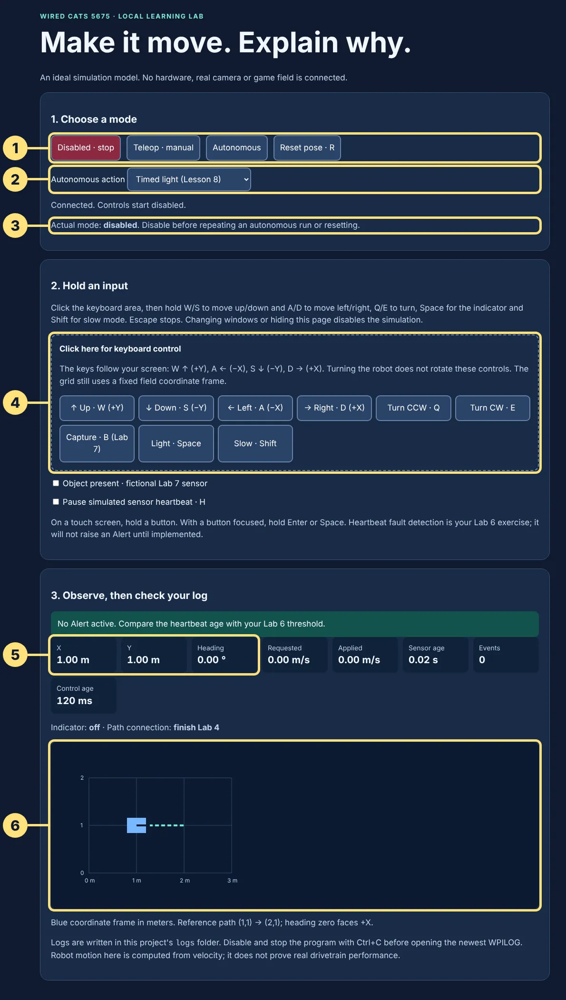

Note Worthy · 2024 team robot ↗Bridge · Java to WPILib
Note Worthy · 2024 team robot ↗Bridge · Java to WPILibOpen your first robot project
Run real robot-framework code on your laptop.
Your next project
This project is a pretend robot that runs on your laptop. It uses the same WPILib code a real robot uses, records what happens, and shows the robot in your browser. No robot, controller or GitHub account is needed.
What is different now
Your Java foundations programs, Lessons 2–7B, ran from top to bottom once and stopped. A robot program does not stop by itself: WPILib runs your code again about 50 times every second until you stop it. You will keep three things open side by side:
Open one file, make one edit, save.
.\robot starts the program. Ctrl+C stops it.
A browser page showing the pretend robot. You choose its mode here.
The robot is always in one mode: Disabled (nothing moves), Autonomous (it follows its own program) or Teleop (you drive). Every lab names the one file to open and the mode to choose, so you never need to understand the whole project at once.
1. Open the extracted project
- Use the same stable WPILib 2026.2.1 and Java 17 installation from Lesson 1.
- Right-click the ZIP, choose Extract All, replace the suggested path with
C:\devand click Extract. You now haveC:\dev\sim-starter. Keep this robot project outside OneDrive. WPILib rejects projects stored there. - In 2026 WPILib VS Code choose File → Open Folder and pick
C:\dev\sim-starter, the folder containingbuild.gradle,robot.cmdandsrc. Keep your Java foundations folder separate. - Choose Terminal → New Terminal. The prompt should end in
sim-starter>. Type:
.\robot build.\robot uses the Java 17 that WPILib 2026 installed, like .\run did. On a Mac, use ~/dev/sim-starter and type ./robot.sh build and ./robot.sh instead (Help: using a Mac). The first build needs internet to fetch the pinned libraries and can take several minutes; wait for BUILD SUCCESSFUL. A successful build runs the supplied reference integration test. It does not mean you have completed the student TODOs.
2. Start the model
.\robot- Wait for “WiredCats training ready” in the Terminal. Leave that terminal running.
- Open the local Simulation Station in a browser on this same computer. This address works only while your Java program is running.
- Leave it Disabled. X and Y should both be 1.00 and heading 0.00. This is a coordinate grid, not a competition field.
- To stop: click Disabled, then click in the Terminal and press Ctrl+C. Windows asks “Terminate batch job (Y/N)?”: type Y and press Enter (if it asks again, Y again). A Mac stops without asking. Save code before restarting. A running program does not automatically load an edit.


- Mode buttons. Disabled stops simulated movement and turns the light off; Java, logging and the station display keep running. Teleop lets you drive once Lab 2 adds driving. Autonomous runs the action chosen in 2. Ctrl+C in the Terminal stops the program.
- Autonomous action. Timed light for Lesson 8; the TrainingLine path from Lab 4.
- Actual mode. The mode the robot is really in. Check it after every click.
- Keyboard area. Click it first, then hold keys. Space is the controller’s A button (Lab 1); W, A, S and D drive once Lab 2 adds driving.
- X, Y and Heading. Where the pretend robot is. At the start: 1.00, 1.00 and 0.00.
- The map. The blue box is the robot; the dashed line is the Lab 4 reference path.
.\robot is running. Clicking another window disables the robot. Click the picture to see it full size.Troubleshooting the first run
Port 8767 busy: stop the previous training run. “The term '.\robot' is not recognized”: if the Explorer panel shows build.gradle but no robot.cmd, your project came from an earlier download: add the launcher to an older folder. Otherwise the Terminal is in another folder; open C:\dev\sim-starter with File → Open Folder and start a new Terminal. “Could not find the Java that WPILib 2026 installs”: finish the WPILib 2026 install from Lesson 1. Download failed: ask for network/setup help; do not change Java syntax or install an alpha. Page cannot connect: first confirm the simulation started successfully. The optional WPILib native GUI is not needed; the browser supplies simulated Driver Station data. Do not launch a second Driver Station.
What you just ran: WPILib is the supplied code that manages the robot program. Our model calculates pretend motion, and the browser station displays it and sends your input. Getting this working is today’s goal; you will learn its internal parts one at a time.
3. Read only the files you need
For Java files in this table, press Ctrl+P and type the filename. They live below src/main/java/frc/robot/. Open StudentProgram.java first; you do not need to understand the entire project.
| File | Job |
|---|---|
| Robot.java | Startup, mode changes and the repeating scheduler call. |
| RobotContainer.java | Connect the supplied light, drive model and autonomous choices. |
| StudentProgram.java | Your short TODOs for the six simulation checkpoints. |
| commands/KeepLightOn.java | An action with start and cleanup. |
| subsystems/TrainingDrive.java | Ideal velocity model; no hardware objects. |
| Station.java / station.html | Supplied browser input/display. Read later if curious. |
4. Constructor, helper and callback
public Robot() { /* setup happens once */ }
private void practice() {
System.out.println("One startup calculation");
}
@Override
public void robotPeriodic() { /* repeated framework work */ }This is a small reading sketch, not a replacement file. In the actual Robot.java, its constructor calls practice() explicitly. WPILib does not know that helper’s name. Later calculation lessons replace only that helper, keeping the constructor and scheduler intact.
extends LoggedRobot means Robot builds on an existing class. @Override asks the compiler to check a framework callback such as robotPeriodic. Our own private practice helper has no @Override. Read the inheritance example when those words are new.
The practice bot also constructs its subsystems, calls the command scheduler repeatedly and starts an autonomous command when enabled. The hardware controller changes to SystemCore; Java objects and these responsibilities remain useful. Meet the controller.
Show the working station while disabled. Explain the difference between opening the page, starting Java and enabling a robot mode.